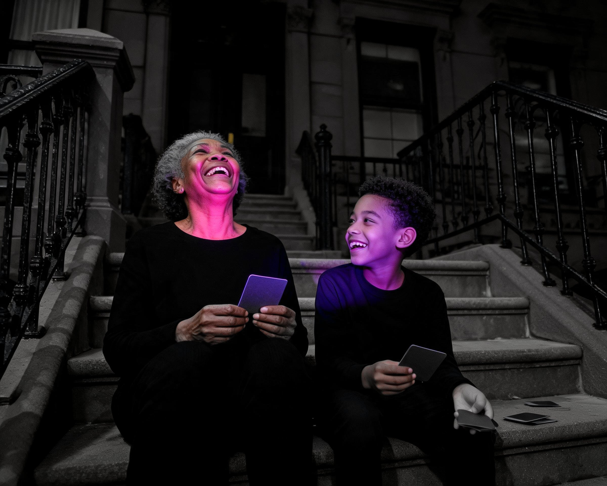
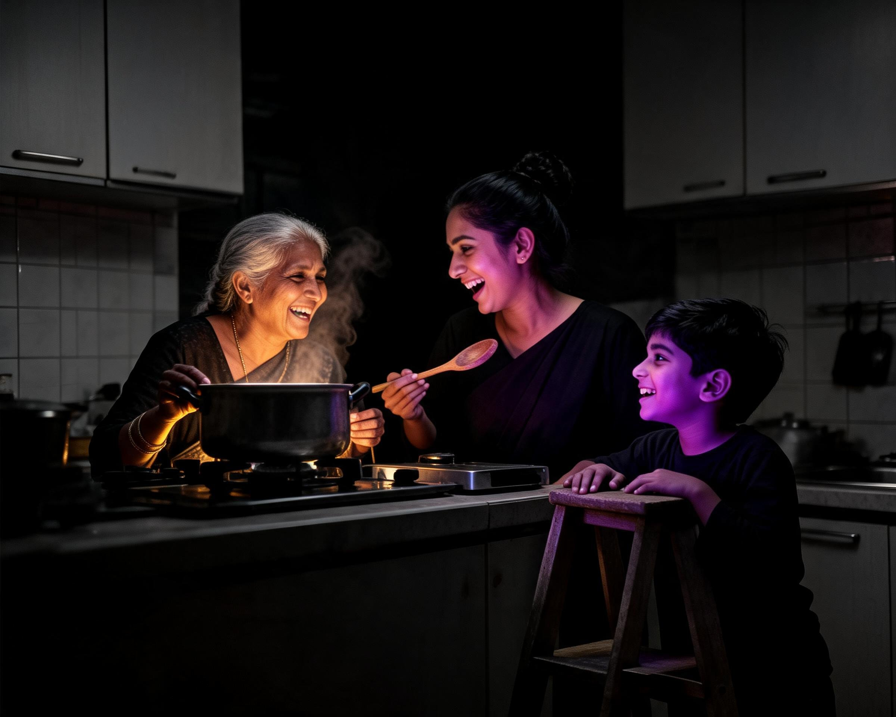

R32 Board — Small-Window Fixes + Multi-Colour Round
Top (01–04): the four treatment re-fixes, with the colour window cut small per your “color is art” note — BEFORE is the version you graded, AFTER is the new small-window version. Bottom (05–08): the multi-colour-per-person round, the “more of these” lane. Click any image to open it full size.
Small-window re-fixes — same photo, tighter colour
No re-generation here. The colour window is pulled in to the skin and the hands, and the black-and-white around it is pushed deeper, so the colour lands as an event instead of a wash. Your originals are untouched on disk.
Rebanded from amber to Love rose, per your note.
Flag: honest ceiling for a code grade — the gold reads slightly mask-like; a re-gen would model the light properly. Your call.
Multi-colour round — more than one colour per frame
New frames, one colour per person, each window kept small. The rest of the frame stays black and white so the colours read as the art, not as a filter.
Flag: grandma laughs upward rather than at the boy — watch whether the connection reads.

Grandma Love rose, grandkid Core violet, cards plain paperFlag: amber runs down the grandmother’s arm wider than the small-window ideal.

Three colours, one per generation Three colours, one per runner
Three colours, one per runner
Flag: the rose face reads weaker than the violet and amber ones; fixable by re-roll if you want it.
Three colours, one per faceAnswer by number: keep / fix / dead — one line each
For 01–04, you are judging the new version against the one you graded. For 05–08 you are judging the new frame the same way.
- 01Rooftop Toast — re-fix, rose
- 02Piggyback — re-fix, rose
- 03Fort Reveal — re-fix, amber
- 04Dawn Swimmer — re-fix, amber
- 05Stoop Cards — new, two colours
- 06Kitchen Trio — new, three colours
- 07Umbrella Run — new, three colours
- 08Blanket Stars — new, three colours
Answer by number 01–08: keep / fix / dead — one line each. Plus your Harvest Crate call.